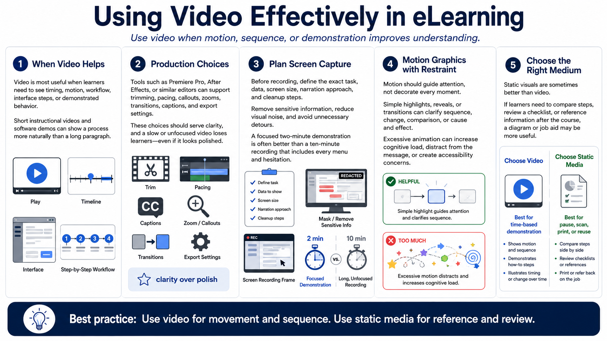

Video, Screen Capture, and Motion
Connecting to LMS... Progress: in progress

Narration
Video is powerful when learners need to see timing, motion, workflow, interface steps, or demonstrated behavior. Short instructional videos can show a process more naturally than a long paragraph. Software demonstrations and screen recordings can help learners observe a task before trying it. The value of video is strongest when movement or sequence is part of the learning problem.
Tools such as Premiere Pro, After Effects, or similar applications can support video editing and motion graphics at a high level. Production choices include trimming, pacing, callouts, zooms, transitions, captions, and export settings. The course designer should make these choices in service of clarity. A slow, unfocused video can lose learners even if it looks polished.
Screen capture needs planning. Before recording, decide the exact task, data, screen size, narration approach, and cleanup steps. Remove sensitive information, reduce visual noise, and avoid unnecessary detours. A focused two-minute demonstration is often better than a ten-minute recording that includes every menu and hesitation.
Motion graphics should guide attention, not decorate every moment. A simple highlight, reveal, or transition can help learners follow a process. Excessive animation can increase cognitive load, distract from the message, or create accessibility concerns. Motion is most useful when it clarifies sequence, change, comparison, or cause and effect.
Sometimes static visuals are better than video. If learners need to compare steps, review a checklist, or reference information after the course, a diagram or job aid may be more useful. Choose video when time-based demonstration matters. Choose static media when learners need to pause, scan, print, or reuse information.